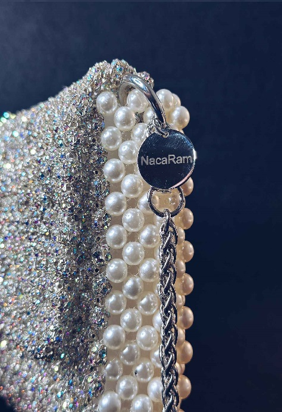
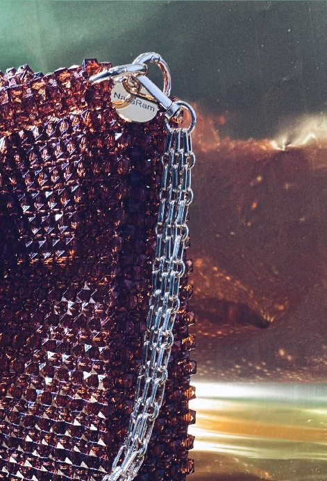

Publicado el 19 de noviembre de 2024
Navidad: Brilla en estas fiestas
Con la navidad a la vuelta de la esquina, hemos creado un bolso espectacular para estas fechas tan especiales. Este bolso combina el brillo y la elegancia de cristales y perlas, perfecto para completar cualquier atuendo navideño. Deja que NacaRam te acompañe en estas fiestas con un accesorio único y lleno de magia.
Publicado el 18 de noviembre de 2024
Bolso Pau: Nuestro Best Sellers
El bolso Pau es nuestra pieza más icónica hasta el momento, diseñado con 2185 cuentas y disponible en varios tonos con los que hemos intentado reflejar la belleza de la naturaleza de nuestra isla
Publicado el 18 de noviembre de 2024
¿Quiénes somos?
En NacaRam creamos bolsos únicos hechos a mano en Tenerife, utilizando perlas acrílicas y de cristal cuidadosamente seleccionadas. Cada bolso cuenta una historia y está diseñado con amor y pasíon.